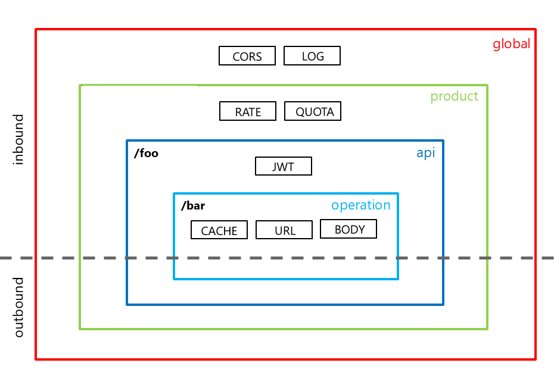

Follow the Execution Pipeline
Policies are ordered XML statements executed by the gateway. They can change routing, validate credentials, transform messages, control traffic, or emit telemetry without changing the backend implementation.
flowchart LR
C[Consumer] --> I[Inbound]
I --> B[Backend]
B --> O[Outbound]
O --> R[Response]
I -.-> E[On error]
B -.-> E
O -.-> E
class C external
class I,B,O azure
class R success
class E danger
Blue stages run in order. Green is a completed response; red is the error branch, which skips remaining normal-stage statements.
Scope and Inheritance Matter
Policies can be scoped globally, to a workspace, product, API, or operation. Not every policy supports every scope or gateway, and workspace availability depends on your service tier.
The <base /> element controls where inherited statements execute within each section. Keep it unless you deliberately intend to change inheritance and have reviewed the effective policy.

How to choose
Place behavior at the narrowest scope that meets your requirement. The labs use API scope so the expected behavior is visible regardless of the product subscription chosen later.
Match the Policy to the Concern
| Concern | Policy family | Design check |
|---|---|---|
| Normalize public headers or URLs | Transformation | Preserve the consumer contract and backend routing. |
| Validate identity and claims | Access restriction | Validate issuer, audience, signature, and required claims; do not merely decode a token. |
| Protect from request bursts | Rate limiting | Choose a counter key that matches your isolation boundary. |
| Reuse environment settings | Named values | Keep secrets out of policy source and plan rotation separately. |
rate-limit-by-key returns 429 Too Many Requests when the rate is exceeded. Distributed enforcement is approximate: do not treat an exact request number as a correctness guarantee or as a billing ledger.
Apply an outbound header in Lab 02 and exercise throttling in Lab 03.
Parameterize Behavior With Expressions and Named Values
Policy expressions use supported C# syntax and an allowed subset of .NET types, not an unrestricted application runtime. A single expression uses @(...); a multistatement expression uses @{...} and must return on every path. The implicit context exposes request, response, subscription, and variable information.
For example, @(context.Request.Method == "GET") can drive a choose condition. A selected branch can set a header or variable without applying that behavior to every method. Validate assumptions about missing headers, absent subscriptions, and body shape: expression verification is limited when saving, and exceptions can become runtime failures.
Named values are reusable configuration values referenced as {{catalog-backend-url}}. Choose plain values for nonsecret configuration, encrypted secret values for sensitive strings, or Key Vault references for centrally managed secrets. A named value is not a request-scoped variable; use policy variables for per-request state.
Separate Rate, Quota, and Concurrency Controls
| Control | Question it answers | Representative policies |
|---|---|---|
| Rate limit | How quickly can this caller issue requests during a short window? | rate-limit, rate-limit-by-key |
| Quota | How much call volume or bandwidth can this subscription or key consume over a period? | quota, quota-by-key |
| Concurrency | How many requests may execute the enclosed work at the same time? | limit-concurrency |
A subscription-based counter uses the APIM subscription context. An expression-keyed counter can use a different isolation boundary, but its input must be trustworthy: an arbitrary caller-supplied header is not a secure tenant identity. Decide what is counted, whether a conditional increment is appropriate, and which operations share the key.
Distributed rate limiting is approximate and regional gateways do not share one rate counter. Concurrency is about simultaneous work, not a requests-per-minute allowance or a global transaction lock. Verify the policy's gateway support and failure response; these controls protect capacity but are not an exact billing ledger.
For a slow backend, a quota alone will not prevent a burst from exhausting connections. Combine suitable controls and make clients handle throttling and retry guidance without retry storms. Lab 03 tests rejection and recovery, not a guaranteed rejection on a particular request number.
Cache Without Crossing Data Boundaries
Caching needs both a cache service and policies that use it. Response caching uses cache-lookup and cache-store for reusable GET responses. Value caching uses cache-lookup-value and cache-store-value for application-selected values and keys; cache-remove-value removes a selected value entry.
The built-in cache is regional and shared across units in that region; it is unavailable in Consumption and on the self-hosted gateway. Classic-tier cache contents do not persist across service updates, while the documented v2 implementation differs. An external Redis-compatible cache is a separately operated service with its own connectivity, availability, and cost considerations.
| Design decision | What to inspect |
|---|---|
| Cache key and variation | Include every input that changes the representation, such as relevant query parameters, headers, or trusted caller context. |
| Personalized responses | Do not share user- or tenant-specific data through a common cache entry. Explicitly review authorization-related caching settings. |
| Freshness | Choose an expiration that matches tolerated staleness, and decide how updates invalidate or replace cached values. |
| Cache failure | Expect misses and backend traffic. Place protective rate limiting after lookup so a cache outage does not overload the backend. |
The synthetic, public Catalog list is easier to reason about than a personalized order response, but a short TTL still changes freshness behavior. Measure cache hits and backend load; do not use latency alone as proof that a cache is correct. Response caching is an optional design choice, not enabled by the required labs.
Choose a Transformation That Preserves the Contract
| Intent | Policy | Design check |
|---|---|---|
| Add, replace, or remove metadata | set-header, set-query-parameter | Distinguish consumer input from trusted gateway-generated values. |
| Map a public path to a backend path | rewrite-uri | Preserve route parameters and intentional query handling. |
| Select another backend | set-backend-service | Review backend identity and network reachability as well as the URL. |
| Construct a request or response payload | set-body | Preserve the documented content type, encoding, and schema. |
| Convert representation | xml-to-json, json-to-xml | Review namespaces, arrays, nulls, and representation differences. |
| Replace text or reshape XML | find-and-replace, xsl-transform | Prefer structural transformations when a text replacement could corrupt data. |
| Rewrite embedded backend links | redirect-content-urls | Check that returned URLs still lead consumers through the intended facade. |
The current URL-rewrite policy is rewrite-uri, not the presentation's rewrite-url label. An outbound header, as used in Lab 02, is a small transformation; changing a body can change the consumer contract and should be tested against its schemas and examples.
Enforce the Parts of the Contract You Intend
An imported definition describes the contract; it does not automatically activate every validation rule. Choose request validation before backend work and response validation before returning data. Schema validation complements authentication and business authorization rather than replacing either.
| Policy | What it checks | Example concern |
|---|---|---|
validate-content | Body size or content against supported JSON/XML schemas | Unexpected payload shape or excessive body size |
validate-parameters | Request header, query, and path parameters against the API schema | A missing or invalid input parameter |
validate-headers | Response headers against the API schema | A backend response missing required metadata |
validate-status-code | Response status codes against the API schema | An undocumented backend response |
validate-graphql-request | GraphQL request validation and authorization settings | A query that exceeds the allowed shape or access rules |
Review each policy's supported sections, actions, schema restrictions, and gateway support. Decide whether a violation is observed or prevented, and include negative tests. Tightening response validation can expose backend drift to consumers, so treat it as a compatibility change rather than a harmless documentation update.
Navigate the Wider Policy Catalog
The presentation's fixed policy count is historical. Choose by concern, supported gateway, scope, and execution section instead of memorizing a count.
| Family | Representative capabilities | Boundary |
|---|---|---|
| Authentication and access restriction | JWT/certificates, header checks, IP filtering, backend credentials | See identity and certificate responsibilities. |
| Traffic protection and caching | Rate, quota, concurrency, response/value caches | Choose counters and data boundaries explicitly. |
| Routing and transformation | Backend selection, proxying, URLs, methods, status, payloads | Preserve an intentional public contract. |
| Control flow and error handling | choose, retry, wait, return-response, forward-request | Account for repeated backend work, short-circuiting, and error paths. |
| External communication and telemetry | send-request, send-one-way-request, trace, log-to-eventhub | Consider latency, failures, credentials, and sensitive logged fields. |
| Cross-domain behavior | CORS; legacy JSONP/cross-domain policies remain in the catalog | Browser access rules are not authentication; prefer the supported modern client model. |
| Dapr integration | Service invocation, pub/sub publishing, output bindings | These Dapr policies target the self-hosted gateway; they are not a managed-gateway lab feature. |
Key takeaway
Compose the smallest effective policy that meets your concern, and inspect the complete inherited pipeline. A valid XML document is not proof of safe runtime behavior.